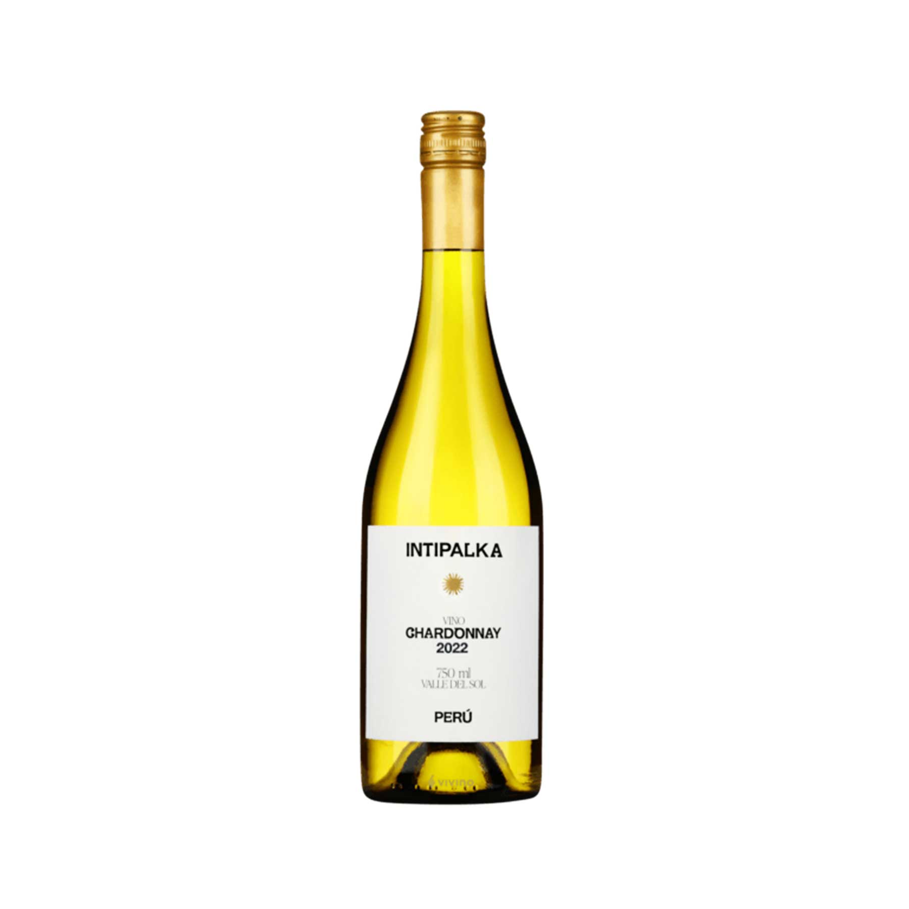
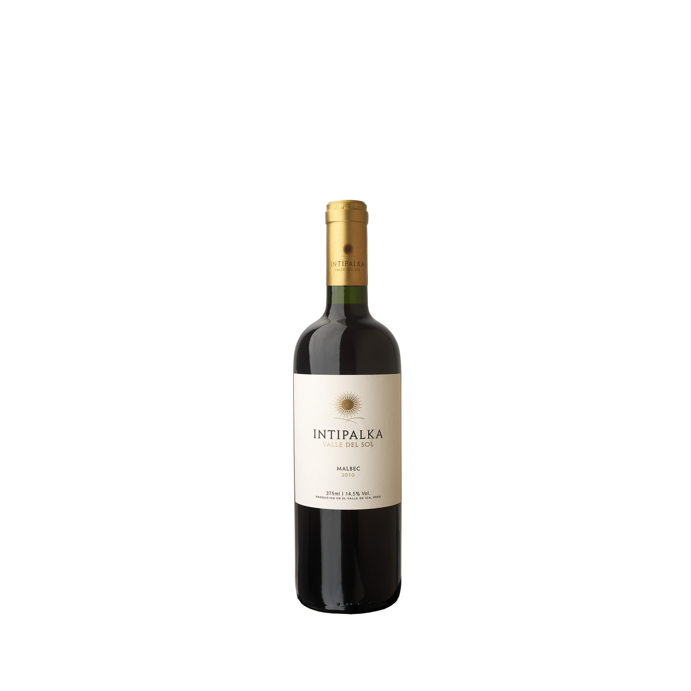
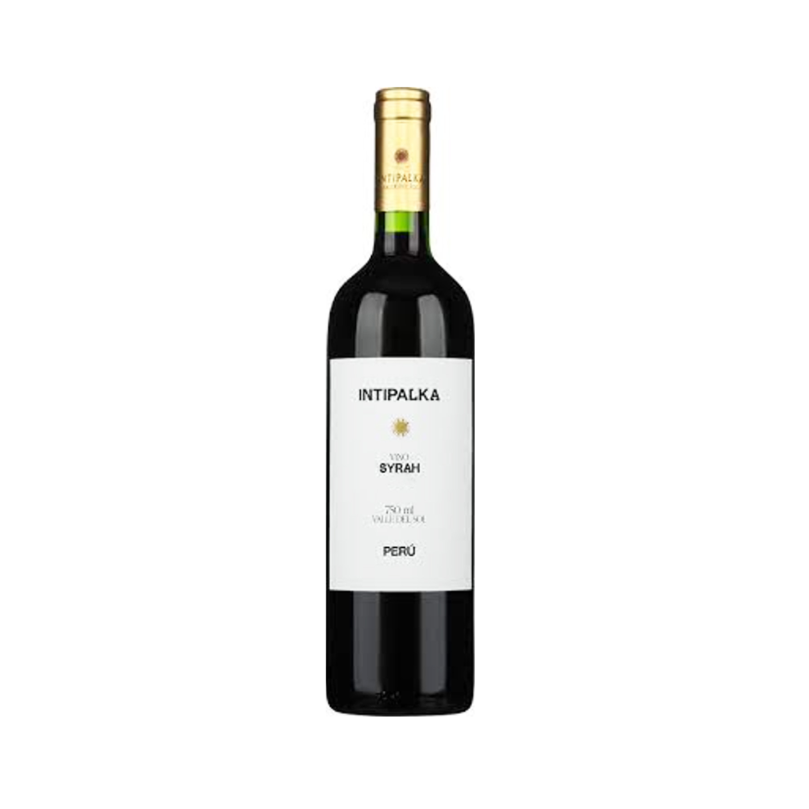
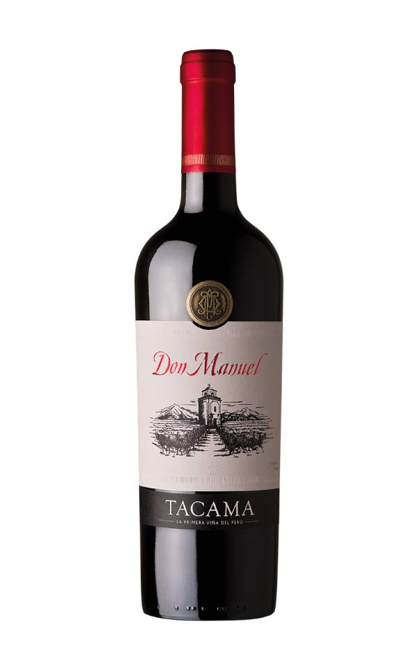
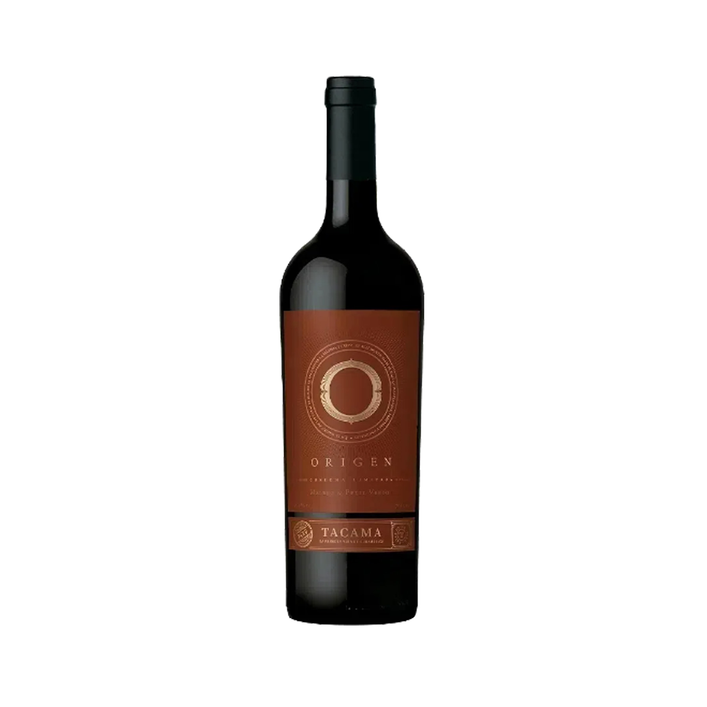

Color amarillo con tintes verdosos, aromas frescos e intensos que recuerdan frutas tropicales con notas cítricas.

S/16
Intipalka Malbec 375ml
Este tinto es de color rojo oscuro, con aromas que recuerdan frutos negros, un toque de chocolate y cerezas maduras.

S/24.90
Intipalka Syrah 750ml
Color rojo rubí con reflejos violetas. Aromas frescos que recuerdan a frambuesas, especias dulces y una nota ligeramente cárnica propio de la variedad.

S/89.90
Vino Don Manuel Tannat 750ml
Púrpura intenso con reflejos violetas. Aromas a frutos negros, ciruela, higo, vainilla y chocolate.

S/63
Tacama Malbec Petit Verdot 750ml
Cosecha manual. Crianza 12 meses en barrica roble francés. En nariz, violeta, nuez moscada y moras.

S/28
Tacama Tonuz Patrimonial Tannat Quebranta 750ml
Nuestro Toñuz es un vino fresco y afrutado con un carácter suave y amigable.